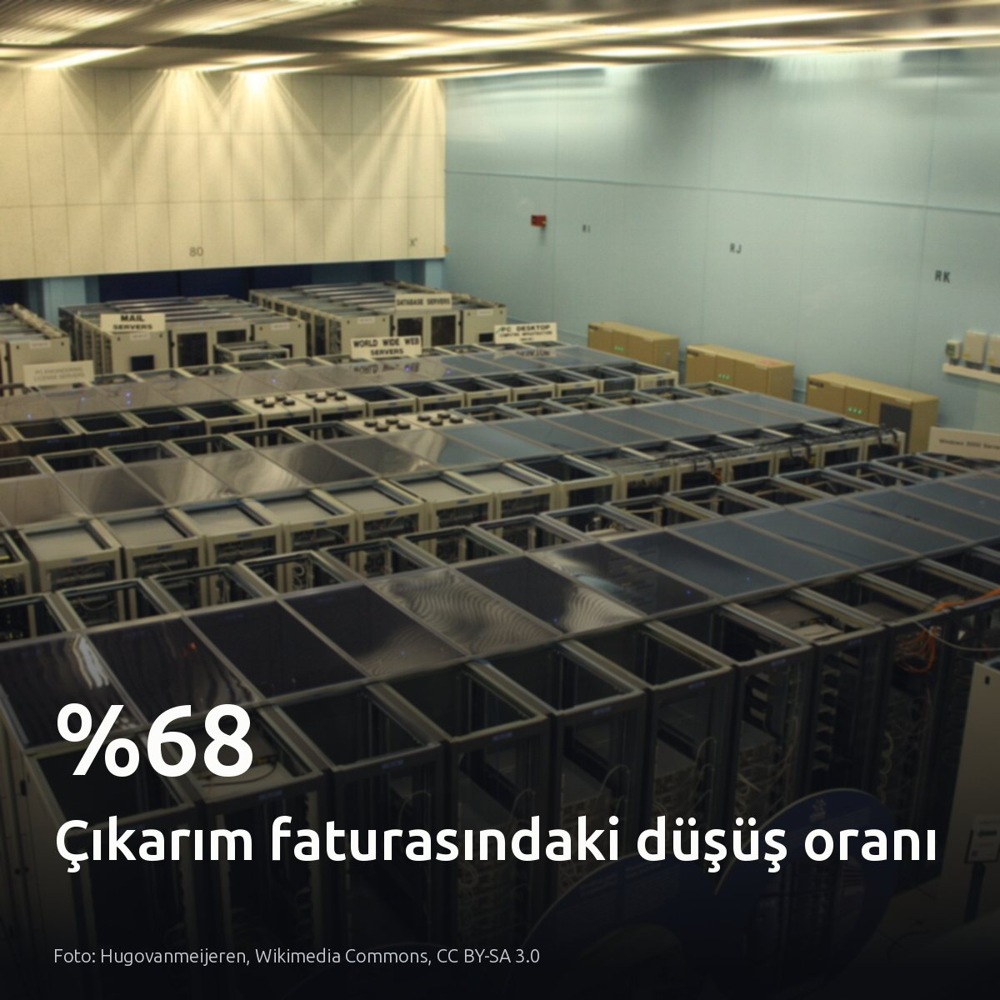
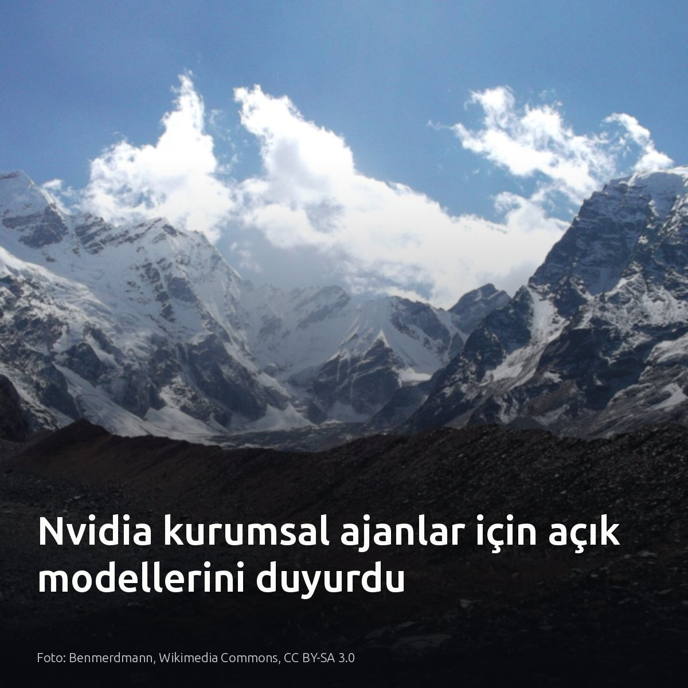
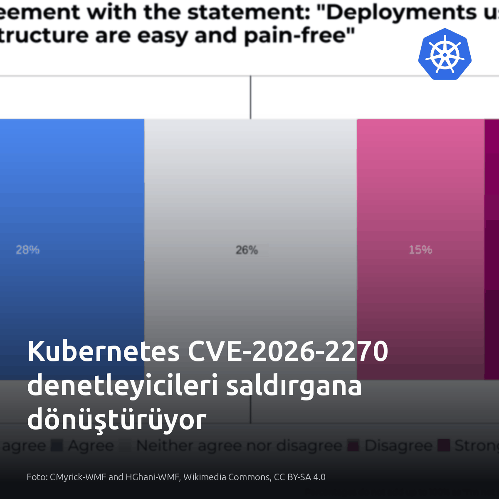
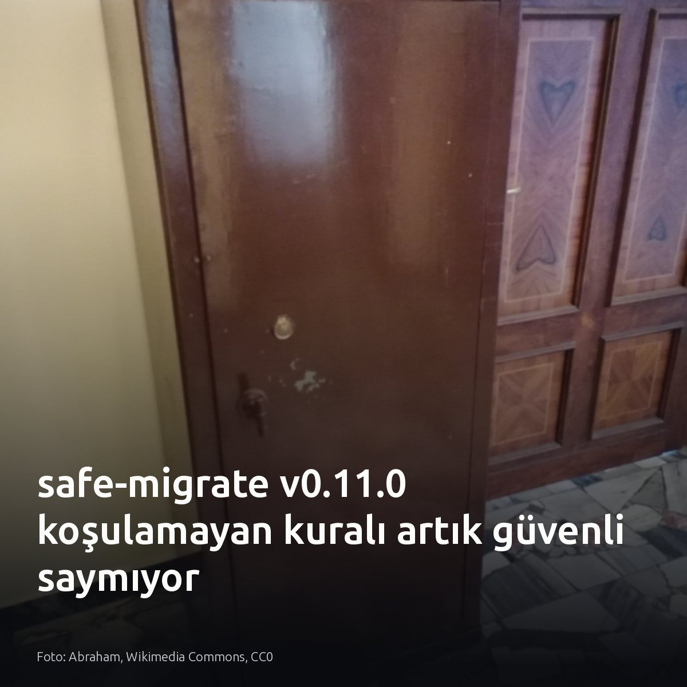

Metni kopyala, kartı indir, LinkedIn'de yapıştır. Bağlantılar gönderiye değil ilk yoruma.

Cloudflare, kod inceleme modelinin çıkarım faturasını %68 düşürdü. Donanım büyütmediler, model küçültmediler. Bütün farkı yaratan adım, tekrar eden sistem istemlerini prompt caching ile sabitlemek ve akıllı model yönlendirmesi kurmak oldu. Maliyeti düşüren şey daha güçlü GPU'lar değil, girdi şablonlarındaki önbellek disiplini. #promptcaching #llmops #inferenceKartı indir
İnceleme ve optimizasyon detayları: Cloudflare: https://blog.cloudflare.com/obsessive-inference-optimization/

Nvidia'nın 120 milyar parametrelik açık modeli, kurumsal ajanlarda bulut API'si bağımlılığını kırıyor. Kapalı bulut servisleri ile yerel modeller arasındaki gerçek işletim ölçüsü veri egemenliğidir. Ayrım çok net. Dokümantasyon özetlemede bulut modellerinin esnekliği avantaj sağlarken; şema, indeks ve müşteri kayıtlarına dokunan otonom ajanlarda dışarıya veri sızdırmayan yerel modeller en güvenli tercih. Kendi PostgreSQL kümenizde çalışan ajanların dış ağa açtığı soketlere ve sorgu loglarına bakın. #postgresql #database #aiagentsKartı indir
Kaynaklar: - Görsel: Benmerdmann, Wikimedia Commons, CC BY-SA 3.0 - [S3] TechCrunch: https://techcrunch.com/2026/10/19/nvidia-launches-new-open-models-to-run-agents-in-the-enterprise-and-on-pcs/

CVE-2026-2270 zafiyeti, küme denetleyicisini doğrudan API sunucusuna saldıran bir tehdide dönüştürüyor. Durum eşitlemesi sırasında sonsuz mutasyon döngüsüne giren özel denetleyiciler, kontrol düzlemini tamamen kilitliyor. Pod yönetimi duruyor. Kendi kümenizde reconcile fonksiyonlarındaki üstel geri çekilme mantığını, mutasyon webhook zaman aşımlarını ve servis hesabı limitlerini acilen doğrulayın. Fakat bu arıza, denetleyici trafiği baştan katı istek kotalarıyla sınırlandırılmış yalın kümelerde geçerli değildir. #kubernetes #devops #platformengineeringKartı indir
Kaynaklar ve detaylar: • Görsel kaynağı: CMyrick-WMF and HGhani-WMF, Wikimedia Commons, CC BY-SA 4.0 • [S1] CVE-2026-2270 analizi: https://medium.com/@ascendrixtech/the-kubernetes-bug-where-your-own-controller-became-the-attacker-lessons-from-cve-2026-2270-3244e1d4a9fe?source=rss------devops-5

CI hattındaki migration denetleyicisinin SAFE raporu vermesi, tablonun kilitlenmeyeceğini garanti etmez. Yaygın kabul, aracın tüm kontrolleri eksiksiz koştuğu yönündedir. Oysa izin veya ortam kısıtı nedeniyle çalıştırılamayan denetimler SAFE geçildiğinde, üretimde tablo kilitleri kaçınılmaz olur. Koşulamayan kontrol güvenli değildir. Bugün çıkan safe-migrate son sürümünde bu açığı kapattı [H1]. Çalıştırılamayan her kural CI sürecini fail-closed mantığıyla durdurmalıdır. #postgresql #database #devopsKartı indir
Kaynaklar: - safe-migrate v0.11.0 sürüm duyurusu ve tartışması: https://www.reddit.com/r/PostgreSQL/comments/1xa2i7a/should_a_migration_linter_say_safe_when_it/ - Görsel kaynağı: Abraham, Wikimedia Commons, CC0